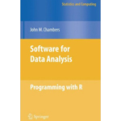
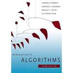
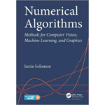
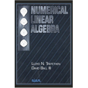
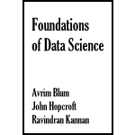
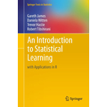
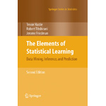
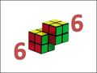
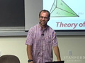

Books and Compilations
Textbooks and Recommended References
There is no single textbook for CDS. The following books and compiled lecture notes treat, quite comprehensively, the topics that CDS broadly tries to cover -- highly recommended.
-

Software for Data Analysis: Programming with R
John Chambers Springer (Second Printing), 2009 -

Introduction to Algorithms
Thomas H. Cormen, Charles E. Leiserson, Ronald L. Rivest and Clifford Stein The MIT Press (Third Edition), 2009 -

Numerical Algorithms
Justin Solomon Available online at this link -

Numerical Linear Algebra
Lloyd N. Trefethen and David Bau III SIAM (June 1997) -

Foundations of Data Science
Avrim Blum, John Hopcroft and Ravindran Kannan Available online at this link -

An Introduction to Statistical Learning
Gareth James, Daniela Witten, Trevor Hastie and Robert Tibshirani Available online at this link -

The Elements of Statistical Learning
Trevor Hastie, Robert Tibshirani and Jerome Friedman Available online at this link -

Mining of Massive Datasets
Jure Leskovec, Anand Rajaraman and Jeff Ullman Available online at this link
The books listed above are the basic references for CDS. During the course, we will refer to these books from time-to-time, as and when requried, but we may not see through any of these books cover-to-cover.
Lecture Videos and Notes
Adds a completely new dimension to Reading
There are several lecture notes and video lectures that perfectly complement the material that CDS plans to cover. The students are encouraged to follow these amazing resources.
-
Linear Algebra | Gilbert Strang
Lecture videos available online at this link -

Algorithms | Demaine and Devadas
Lecture videos available online at this link -

Numerical Algorithms | Justin Solomon
Lecture videos available online at this link -

Statistical Learning | Hastie and Tibshirani
Lecture videos available online at this link -
Machine Learning | Andrew Ng
Lecture videos available online at this link -
Machine Learning | Nando de Freitas
Lecture videos available online at this link -
Big Data Initiative | CSA @ IISc
Lecture videos available online at this link
Programming Resources
If you take CDS, you must get your hands dirty
The main tools for computing used in CDS are R and Python. The following resources may help you in getting yourself acquainted with the basics of both the languages. Get comfortable!
- Think Python | By Allen B. Downey
- Dive into Python | By Mark Pilgrim
-
Learn Python the Hard Way | By Zed A. Shaw
Read through the online copy of the book, and diligently complete each exercise. - Python Class by Google | After the "Hard Way", take a decent online class.
- Useful Modules in Python | Now find yourself a Python module of your choice.
-
scikit-learn -- Machine Learning in Python
Undoubtedly the best Python package for Data Analytics and Machine Learning.
Visual Map for ML Algorithms | Video Tutorials from Data School -
Building Machine Learning Systems with Python
Wonderful book with a number of cool applications of Machine Learning.
By Willi Richert and Luis Pedro Coelho | Source Codes from GitHub -
R and Data Mining | By Yanchang Zhao
Wonderful book with a number of cool applications of Data Mining. -
Advanced topics in R and Understanding Memory in R | By Hadley Wickham
Really good articles on the advanced technical nitty-gritties of R. - Introducing Monte Carlo Methods with R | By C.P. Robert and G. Casella
Lovely introduction to Monte Carlo simulations with hands-on applications in R. -
Monte Carlo Simulations in R | By Will Kurt
Nice blog-post introducing Monte Carlo simulations using R.
Ideas for Term Projects
Start thinking about Projects, from the very start
The students are encouraged to choose their own projects, inspired by online competitions, theoretical research problems, or practical problems from the Industry. The following list of ideas is just a starting point. Talk to the instructor, if you have any doubt about the project.
Under construction -- some initial ideas for the Term Project to be posted shortly.